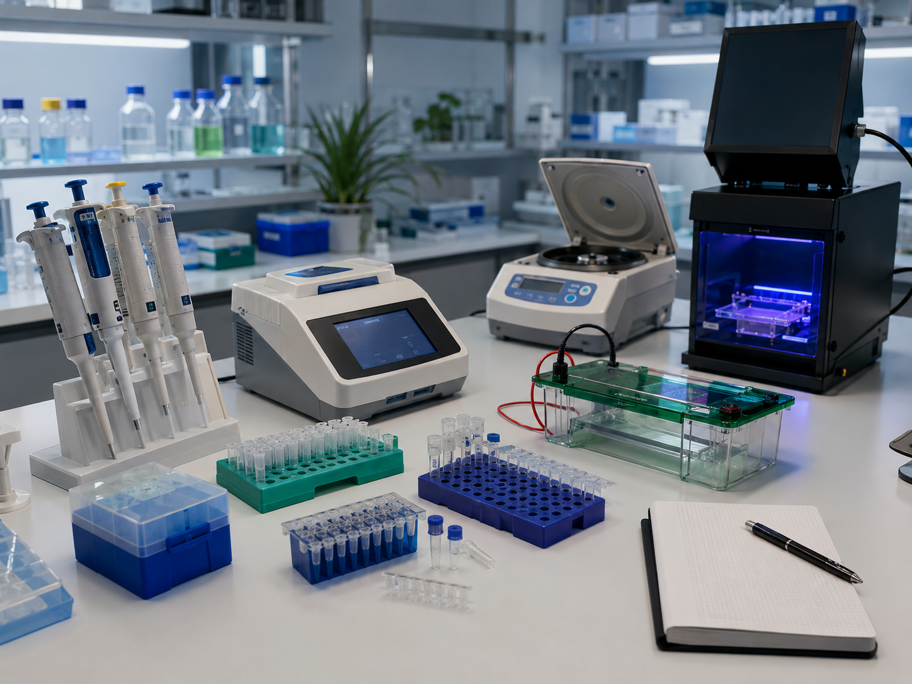
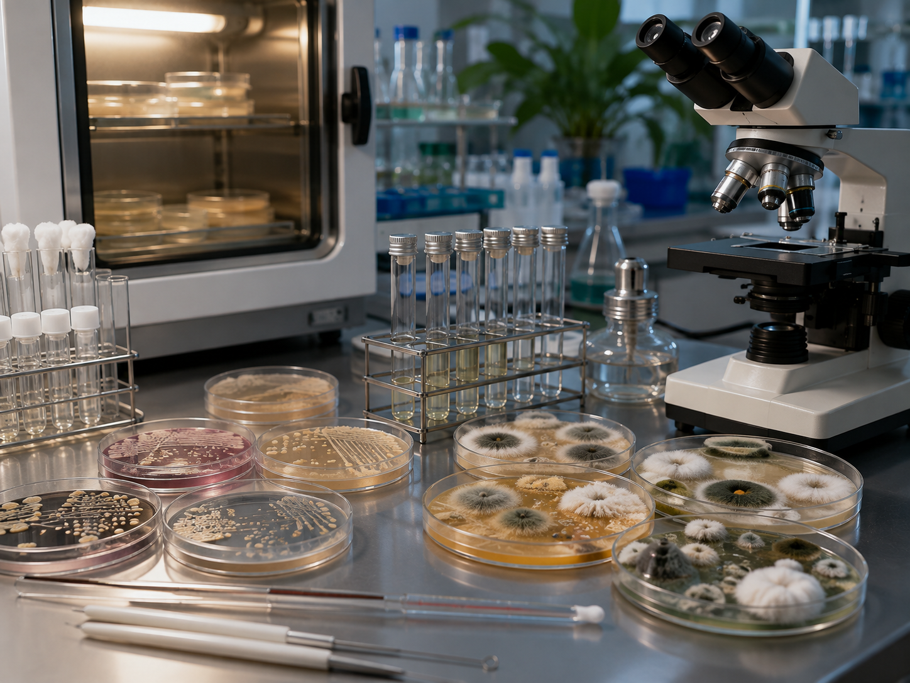
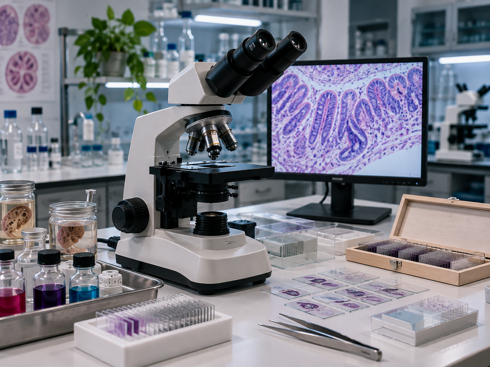
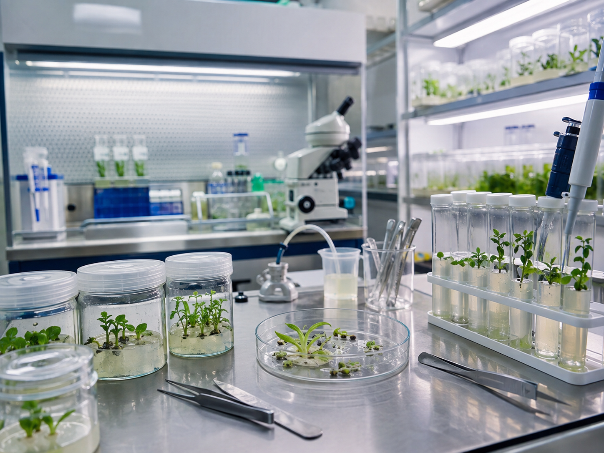
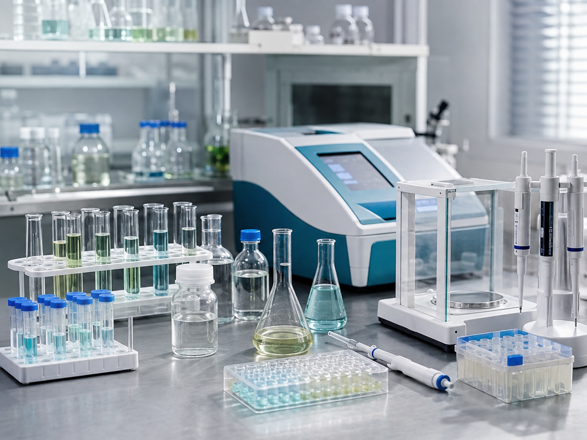
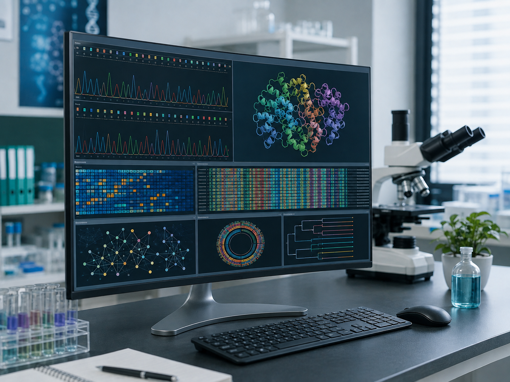
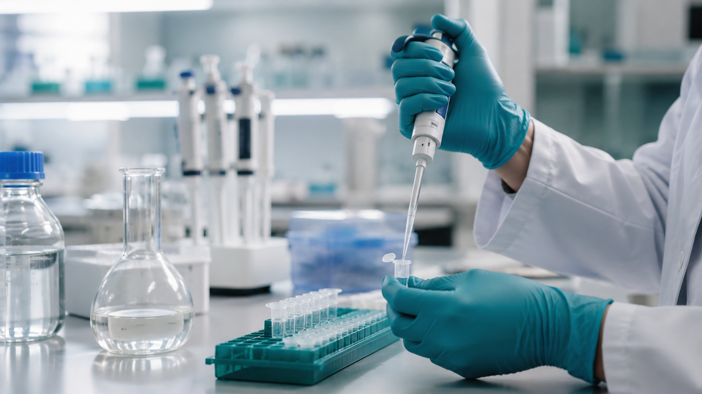

Molecular & Genetic Biology
Practical study of DNA, RNA, genes and molecular mechanisms underlying modern biotechnology.
DEPARTMENT OF BIOTECHNOLOGY
Practical learning that connects biological knowledge with observation, experimentation, analysis and scientific interpretation.
PRACTICAL EDUCATION
Biotechnology brings together molecular, cellular, microbial, plant, biochemical and computational sciences.
Practical laboratory learning complements this academic foundation by developing observation, experimental reasoning, analytical thinking and responsible interpretation of scientific results.
SCIENTIFIC AREAS

Practical study of DNA, RNA, genes and molecular mechanisms underlying modern biotechnology.

Investigation of microorganisms and fungi, their characteristics and their relevance to biotechnology.

Microscopy-based examination of cells, tissues and biological structures through observation and preparation.

Study of plant systems and biotechnology-based approaches connecting plant biology with applied biological science.

Investigation of biomolecules, biochemical processes and analytical approaches applied to biological samples.

Computational approaches for organizing, examining and interpreting biological and molecular information.

PRACTICAL & RESEARCH EXPERIENCE
Laboratory learning encourages students to move from observing biological phenomena toward asking scientific questions, evaluating evidence and developing scientific interpretations.
This practical perspective connects academic learning with scientific investigation and the wider research culture of biotechnology.
Explore Department ResearchSCIENTIFIC PRACTICE
Practical education develops habits that extend beyond individual procedures: precision, observation, analytical reasoning and clear scientific communication.
Examine biological structures, samples, systems and experimental changes carefully.
Approach biological questions through appropriate scientific methods.
Examine observations and results using evidence-based scientific reasoning.
Present findings clearly and connect evidence with biological concepts.
ACADEMIC CONNECTION
Laboratory-oriented study supports the Department's broader academic experience by connecting theoretical concepts with practical observation, experimentation and scientific interpretation.